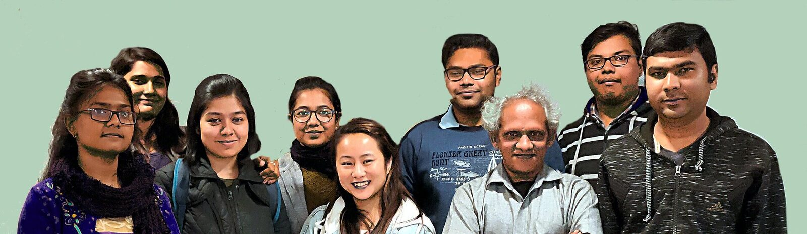
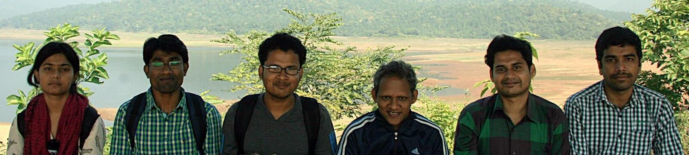
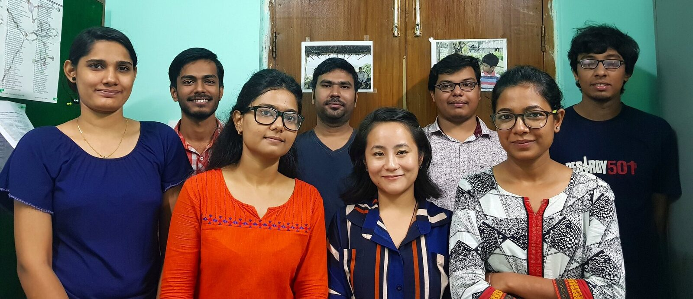
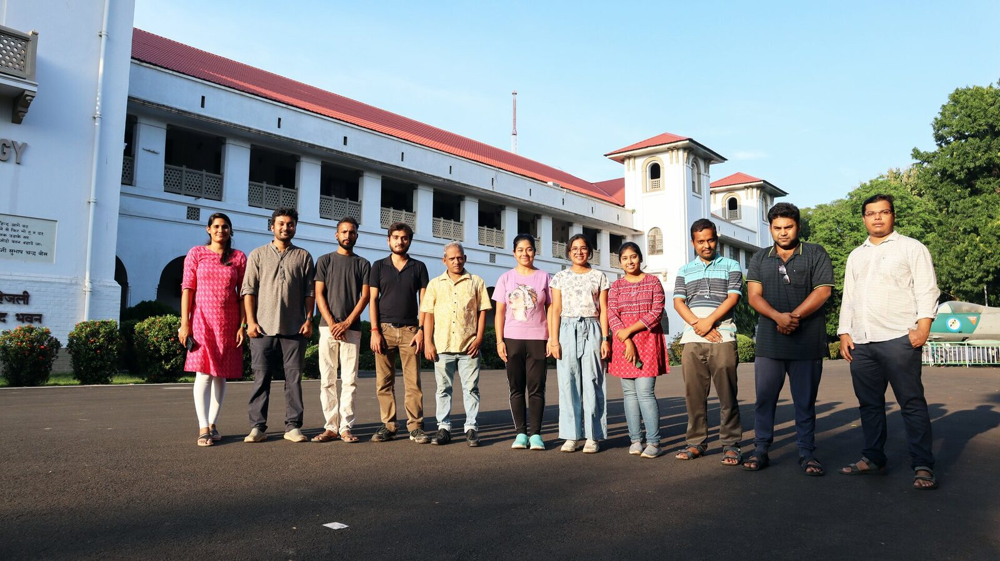

People and continuity
AnoopLab alumni
Former PhD and MSc researchers are recorded here as part of a computational chemistry programme developed across IIT Kharagpur and Digital University Kerala.
Former researchers
PhD

Dr. Subhajit Mandal
Jointly supervised with Prof. P. K. Chattaraj.

Dr. Surajit Nandi

Dr. Davaluri Yogeswara Rao

Dr. Eshani Das

Dr. Maya Khatun

Dr. Saikat Roy

Dr. Sunanda Panda
Jointly supervised with Dr. Kiran Gore.

Dr. Moumita Banerjee
Jointly supervised with Prof. N. D. Pradeep Singh.

Arpita Poddar
Former PhD student, jointly supervised with Prof. P. K. Chattaraj and Prof. Ganesh V.

Pratik Sarkar
Former PhD student, jointly supervised with Prof. Sukanta Mandal.

Sandip Giri
Former PhD student, jointly supervised with Prof. Ganesan Mani.
Former researchers
MSc
- Neeladitya Chowdhuri
- Divyangna Sharma
- Sahil Das
- Devesh Avasthi
- Sumit Nath
- Rajkumar
- Ayusman Chiranjivi
- Sayan Paul
- Aurodeep Panda
- Kamal Singh Nayal
- Dr. Rajat S. Majumder
- Shubham Bhatt
- Dr. Debankur Bhattacharyya
- Rishabh Upadhyay
- Susovan Ghosh
- Ved Agnihotri
- Dr. Viki Kumar Prasad
- Rekha Banasal
- Ayushi Maheswari
- Anurag Sharma
- Kusal Kishku
- Parmeet Kaur
- Rajul Srivastava
- Dr. Vasudevan S.
- Lalchhandama V.
- Shafeek A. S.
- Chandan Jana
Archive
Group photographs



